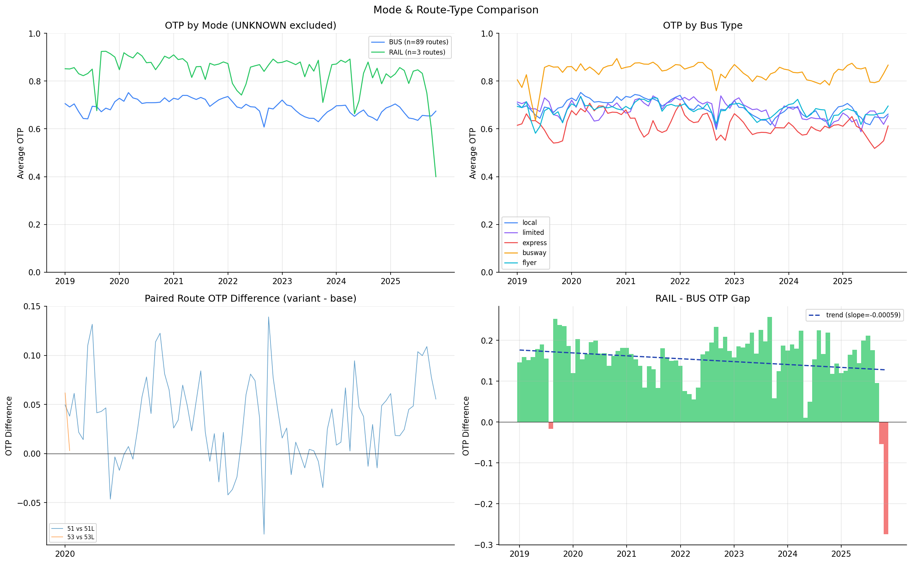

Analysis
02 - Mode Comparison
Core OTP Patterns
Coverage: 2019-01 to 2025-11 (from otp_monthly).
Built 2026-06-05 17:58 UTC · Commit 7493239
Page Navigation
Analysis Navigation
Data Provenance
flowchart LR
02_mode_comparison(["02 - Mode Comparison"])
t_otp_monthly[("otp_monthly")] --> 02_mode_comparison
01_data_ingestion[["Data Ingestion"]] --> t_otp_monthly
u1_01_data_ingestion[/"data/routes_by_month.csv"/] --> 01_data_ingestion
u2_01_data_ingestion[/"data/PRT_Current_Routes_Full_System_de0e48fcbed24ebc8b0d933e47b56682.csv"/] --> 01_data_ingestion
u3_01_data_ingestion[/"data/Transit_stops_(current)_by_route_e040ee029227468ebf9d217402a82fa9.csv"/] --> 01_data_ingestion
u4_01_data_ingestion[/"data/PRT_Stop_Reference_Lookup_Table.csv"/] --> 01_data_ingestion
u5_01_data_ingestion[/"data/average-ridership/12bb84ed-397e-435c-8d1b-8ce543108698.csv"/] --> 01_data_ingestion
t_route_stops[("route_stops")] --> 02_mode_comparison
01_data_ingestion[["Data Ingestion"]] --> t_route_stops
t_routes[("routes")] --> 02_mode_comparison
01_data_ingestion[["Data Ingestion"]] --> t_routes
d1_02_mode_comparison(("numpy (lib)")) --> 02_mode_comparison
d2_02_mode_comparison(("polars (lib)")) --> 02_mode_comparison
d3_02_mode_comparison(("scipy (lib)")) --> 02_mode_comparison
classDef page fill:#dbeafe,stroke:#1d4ed8,color:#1e3a8a,stroke-width:2px;
classDef table fill:#ecfeff,stroke:#0e7490,color:#164e63;
classDef dep fill:#fff7ed,stroke:#c2410c,color:#7c2d12,stroke-dasharray: 4 2;
classDef file fill:#eef2ff,stroke:#6366f1,color:#3730a3;
classDef api fill:#f0fdf4,stroke:#16a34a,color:#14532d;
classDef pipeline fill:#f5f3ff,stroke:#7c3aed,color:#4c1d95;
class 02_mode_comparison page;
class t_otp_monthly,t_route_stops,t_routes table;
class d1_02_mode_comparison,d2_02_mode_comparison,d3_02_mode_comparison dep;
class u1_01_data_ingestion,u2_01_data_ingestion,u3_01_data_ingestion,u4_01_data_ingestion,u5_01_data_ingestion file;
class 01_data_ingestion pipeline;
Findings
Findings: Mode Comparison
Summary
Light rail consistently outperforms bus by a wide margin, and the difference is statistically significant (Mann-Whitney U = 6,563, p < 0.001). Among bus routes, dedicated right-of-way (busway) routes perform nearly as well as rail, and limited-stop variants beat their local counterparts.
Key Numbers
| Mode / Type | Avg OTP (unweighted) | Avg OTP (trip-weighted) | Route Count |
|---|---|---|---|
| RAIL | 84% | 84% | 3 |
| Busway (P1, P3, G2) | 71--76% | -- | 3 |
| Flyer (P/G/O prefix) | ~70% | -- | ~16 |
| Limited (L suffix) | ~72% | -- | varies |
| Express (X suffix) | ~70% | -- | varies |
| Local bus | 63--69% | -- | ~60 |
Statistical Tests
- Mann-Whitney U test (RAIL vs BUS monthly OTP): U = 6,563, p < 0.001 (n = 83 months each). Rail median monthly OTP = 86.1%, bus median = 69.2%. The difference is highly significant.
- Paired route comparison (2 pairs: 51/51L, 53/53L): Limited variants average +3.5 percentage points over their local counterparts (paired t-test: t = 7.37, p < 0.001, 95% CI: [+2.5, +4.4 pp], n = 85 paired monthly observations across 2 pairs). While the test is significant, the sample of only 2 route pairs limits the generalizability of this finding.
- Trip-weighted mode average: Bus trip-weighted OTP (66.8%) is about 2 pp below the unweighted average (68.9%), confirming that high-frequency bus routes tend to perform worse. Rail is nearly the same weighted (83.8%) vs unweighted (84.1%).
Observations
- Busway routes (P1, P3, G2) perform nearly as well as rail, consistent with the dedicated-right-of-way hypothesis.
- The previous classification grouped all P/G-prefix routes as "busway," which incorrectly included flyer routes like P17 (Lincoln Park Flyer), P78 (Oakmont Flyer), G3 (Moon Flyer), and G31 (Bridgeville Flyer). The corrected classification identifies only P1, P2, P3, and G2 as true busway routes.
- Only 2 local/limited pairs were found in the data (routes with matching base IDs). More pairs would strengthen the comparison.
- The RAIL--BUS gap has been roughly stable over time -- both modes declined in parallel, suggesting system-wide factors rather than mode-specific ones.
- The INCLINE mode has no OTP data and was excluded.
Caveats
- Five UNKNOWN-mode routes (37, 42, P2, RLSH, SWL) were excluded from the analysis. P2 (East Busway Short) is plausibly a BUS/busway route, but its mode is listed as UNKNOWN in the database and it also lacks
route_stopsdata. - Bus route classification uses route ID naming conventions. True busway routes are identified as P1, P2, P3, G2; all other P/G/O-prefix routes are classified as flyers. Some routes may still be misclassified if their ID doesn't follow the standard pattern.
- Rail has only 3 routes (RED, BLUE, SLVR), so its average is sensitive to any single route's performance. The Mann-Whitney test has adequate statistical power due to 83 months of observations, but the underlying data comes from only 3 routes.
- The mode-level unweighted average treats each route equally regardless of trip volume. The trip-weighted version provides a ridership-adjusted perspective.
- Route composition varies across months (68--96 routes reporting). No balanced-panel filter is applied, so the set of routes contributing to each month's average is not fixed.
Review History
- 2026-02-11: RED-TEAM-REPORTS/2026-02-11-analyses-01-05-07-11.md -- 6 issues (1 significant). Replaced "significantly outperforms" with formal Mann-Whitney U test, added paired t-test with 95% CI, excluded UNKNOWN-mode routes, fixed classify_bus_route to correctly distinguish busway from flyer routes, added trip-weighted mode comparison, and documented composition variability.
Output

comparison chart.
No interactive outputs declared.
monthly OTP by mode/type (unweighted).
Preview CSV
Expand to load preview.
monthly OTP by mode (trip-weighted).
Preview CSV
Expand to load preview.
Methods
Methods: Mode Comparison
Question
Does light rail (dedicated right-of-way) consistently outperform bus? Do limited/express routes beat their local counterparts?
Approach
- Exclude UNKNOWN-mode routes (37, 42, P2, RLSH, SWL) from the analysis to avoid ambiguous classifications.
- Group routes by mode (BUS, RAIL) and compute average OTP per mode per month, both unweighted and trip-weighted (using
trips_7dfromroute_stops). - Perform a Mann-Whitney U test on the monthly mode-level OTP distributions to formally test whether the RAIL--BUS difference is statistically significant.
- Classify bus routes by type using route ID patterns:
- Busway: P1, P2, P3, G2 (dedicated right-of-way)
- Flyer: Other P/G-prefix routes (e.g., P17, P78, G3, G31) and O-prefix routes (park-and-ride express services)
- Limited: L-suffix routes (e.g., 51L, 53L)
- Express: X-suffix routes
- Local: All other bus routes
- Compare paired routes sharing the same corridor (e.g. 51 vs 51L) as natural experiments. Perform a paired t-test on monthly OTP differences and report the mean difference with a 95% confidence interval.
- Test whether the mode gap changes over time.
Data
| Name | Description | Source |
|---|---|---|
otp_monthly |
Monthly OTP per route | prt.db table |
routes |
Mode classification (filter out UNKNOWN) | prt.db table |
route_stops |
Trip counts for trip-weighted mode averages | prt.db table |
Output
Source Code
|
Sources
| Name | Type | Why It Matters | Owner | Freshness | Caveat |
|---|---|---|---|---|---|
| otp_monthly | table | Primary analytical table used in this page's computations. | Produced by Data Ingestion. | Updated when the producing pipeline step is rerun. | Coverage depends on upstream source availability and ETL assumptions. |
Upstream sources (5)
|
|||||
| route_stops | table | Primary analytical table used in this page's computations. | Produced by Data Ingestion. | Updated when the producing pipeline step is rerun. | Coverage depends on upstream source availability and ETL assumptions. |
Upstream sources (5)
|
|||||
| routes | table | Primary analytical table used in this page's computations. | Produced by Data Ingestion. | Updated when the producing pipeline step is rerun. | Coverage depends on upstream source availability and ETL assumptions. |
Upstream sources (5)
|
|||||
| numpy | dependency | Runtime dependency required for this page's pipeline or analysis code. | Open-source Python ecosystem maintainers. | Version pinned by project environment until dependency updates are applied. | Library updates may change behavior or defaults. |
| polars | dependency | Runtime dependency required for this page's pipeline or analysis code. | Open-source Python ecosystem maintainers. | Version pinned by project environment until dependency updates are applied. | Library updates may change behavior or defaults. |
| scipy | dependency | Runtime dependency required for this page's pipeline or analysis code. | Open-source Python ecosystem maintainers. | Version pinned by project environment until dependency updates are applied. | Library updates may change behavior or defaults. |